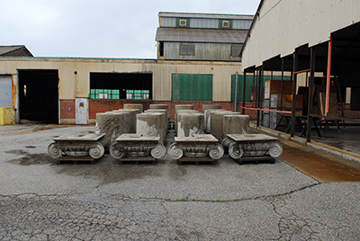

North of Little Avenue is a sprawling complex of steel frame industrial buildings that is a weirdly anti-nostalgic repository of the nation’s largest collection of architectural artifacts. The National Building Arts Center sprawls across nearly 15 acres in a wedge-shaped site, occupying the historic foundry built in stages by the Sterling Steel Casting Company beginning in 1921. While most industrial facilities of the American Bottom have faced demolition or dereliction upon closure, not so with this complex which ended up in the ownership of the National Building Arts Center (NBAC) by 2005. NBAC is an improbable operation led by salvage expert and historian Larry Giles, whose careful work has brought together parts and wholes of building systems from St. Louis, Chicago, New York, and elsewhere. Giles’ collection contains over 300,000 parts and includes over 120 cast iron storefronts, several full building elevations, machine shops, and more. The NBAC also possesses a study library on architectural and allied arts whose contents defy the scale of the grassroots NBAC.
NBAC is not a columbarium of lost architecture, but rather a place that promotes holistic learning on how buildings work and what craft is needed for their care. While Giles’ efforts to conserve material at the eleventh hour can be seen as desperate preservation, in fact the results compose a forward-looking collection that aims to inspire and nurture building arts in the twenty-first century. Perhaps the challenge of NBAC is that its intellectual stake in its own collection, and its earnest rehabilitation of a once-discarded industrial facility, are so alien to the practice of historic preservation in the United States as to require either a new definition or a new term. NBAC embraces David Harvey’s assertion that tourism is about becoming instead of being. Visitors here are invited into a process of knowing and sharing, not into an easy encounter with closely interpreted objects. NBAC currently is not open to the public, and much of its collection is stored in custom crates. The volume alone speaks to the death of much architecture in Giles’ nearly 40 years of salvaging, but the keepers disavow that the resting place is a memorial site. Thus NBAC aims for hard, earnest labor atop nearly Herculean past efforts: challenging object conservation’s lethargy and bursting historic preservation’s bias toward remaking the past into the image of the present. NBAC dares the future to be more like the past, when the building arts whose object-products it conserves were widespread living arts.
Intangible Heritage on the American Bottom